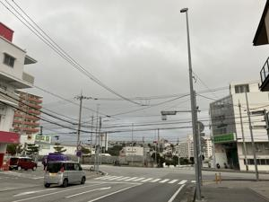

うるがいの話 ある日
最新: イケメン君【うるがいの話 ある日】とは 一日だけのプログです
『うるがいの話』の最新一日だけのプログで、通信料が少なく経済的だ。カニの画像をクリックすると全ての日付が載る『うるがいの話』サイトを表示します
|
|
【うるがいの話】 うるがい(ｳﾙｶﾞｲ urugai)とは、『もずくがに』の名前でとても大きくなります。 |
|---|---|
|
|
【カミマヤーの話】 猫のことを方言でマヤーといいます。カミマヤー（kamimayaa）とは、神の猫のことです。 |
|
【たながぁの音楽】 たながぁ（ﾀﾅｶﾞｰ tanagaa）とは手長えびのことで、何種類かあり大きいのは車 エビぐらいになります。 |

|
【ぶながぁの話】 ぶながぁ(ﾌﾞﾅｶﾞｰ bunagaa)とは、赤い髪の毛、赤い身体、そして身長は１ｍ２０ｃｍ ぐらい、川の蟹を食べているの目撃された。場所は沖縄県国頭郡大宜味村のと ある村僕の隣近所に住んでいる爺さんから、聞いた話です。 |
|
|
【ギーマの話】 ギーマ(giima)とは、山原の里山に咲くスズランに似た、 花を付けます。実は食べられます、 気が付くと口の周りが紫になっています。 |
2024年03月06日 (水）イケメン君
18:54

ん！、県外の人？とイケメン君に尋ねると『いいえ沖縄です。でもよく言わ
れます、訛りもないから』、ほー、両親は沖縄の人？、『はい』。オギさん
から院生だと聞かされる。確かに会話してても、頭良さそうだし、採用され
たのは分かるような気がする。２７歳、なんでこの会社に入ったのか・・。
フムフム、２０代が三名いる、どうもホームページにある、老後のゆったり
とした仕事とは違うのだが。ま、いいか。彼らは生活がかかっている、誰か
さんみたいに来月辞めても困らない人と違う。オギさん、事前調査不足で研
修計画が狂ってしまい、体調を崩して昨日早退、今日はカゼで休み、仕方な
いカバーするかとネットをさまよう。
１８時４８分 ビットコインの総資産 ￥２８、９３０（↓１３２）